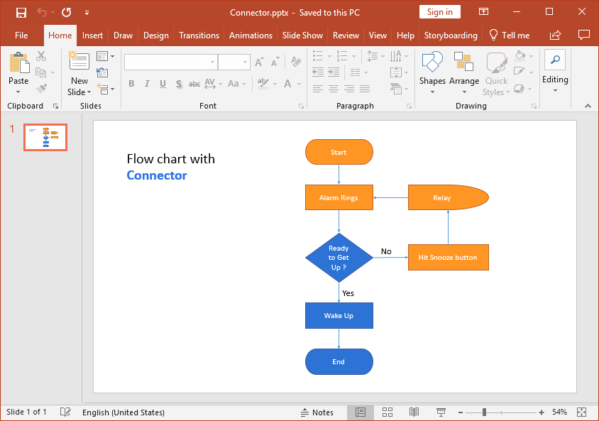

Essential Presentation library has support for inserting and editing connectors in a PowerPoint presentation.
This sample demonstrates how to insert the connectors in a PowerPoint slide.
Features:
Note: This library supports creating, editing, and converting of connectors for .pptx format alone.
The following is the screenshot of output document generated by Essential Presentation.
